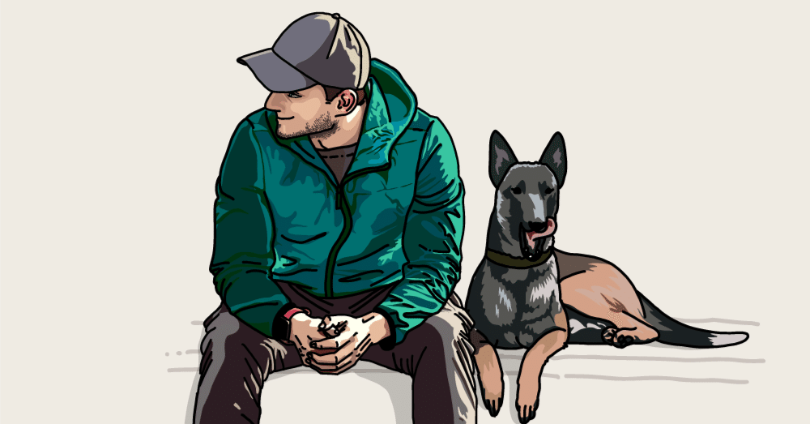

はじめまして。大月海人と申します。
読みは「おおつきかいと」です。「海人」は居酒屋さんで見かける「うみんちゅ」ではありません。
（ちなみに2020年8月までは“進藤海”、2025年8月までは“海人”と名乗っていました）
1993年に生まれて以来、多少は人生の浮き沈みを経験しましたが、大半は平々凡々な人生をひた走ってきました。
思い返せば、14歳で日記を始めたことがきっかけで書くことに熱中し、20歳から短編小説や詩を書くようになりました。
Webに創作物を投稿し始めたのが2015年。いくつかの場所を経て、2017年から2026年9月まではnoteを拠点に文章を書いてきました。
そして2026年9月から、これまで書いてきた文章と、その先の文章を置いていく場所として、この「季節の跡先」を始めました。
とにかく、文章を書くのが好きなのです。
日常生活では、未だに緊張したりして口下手になることもありますが、文章では落ち着いて言葉を紡ぐことができます。言葉遊びの延長のような感覚で、真面目なことも、くだらないことも、物語も、自分なりの言葉にしていけるからなのかな、と思います。
平凡な文章でも、誰かの心を一瞬でも動かすことができたら、僕はとても嬉しいです。
そして、いつかそんな文章を書いてみることは、昔から変わらない僕の夢でもあります。
この場所には、長いあいだ書いてきた文章が並んでいます。
真剣に読む必要は一切ありません。気になるタイトルがあったときに、ふらっと一篇だけでも読んでもらえたら嬉しいです。
過ぎていったものも、これから訪れるものも。
その跡先に残った言葉を、ここで少しずつ書き継いでいこうと思います。